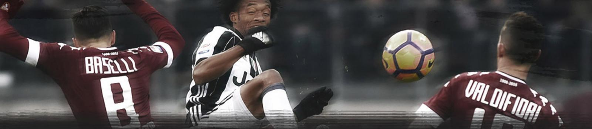

CONTRIBUTORS

DEAN WHEATLEY
Dean Wheatley adalah seorang pelatih sepakbola denga lisensi A UEFA. Ia sempat menjadi pelatih kepala di Woodlands Wellington FC, Singapura. Saat ini ia menjadi pemilik dari perusahaan Potential Unlimited, sebuah perusahaan yang memberikan pelatihan psikologis bagi atlet-atlet muda.
ARTICLES
PELUANG CHRIS COLEMAN SEBAGAI MANAJER SWANSEA
Aku harus mengatakan bahwa aku sama sekali tidak berfikir Chris Coleman ketika Swansea memecat Bob Bradley. Namun, ini menjadi masuk akal sekarang.
KEPERGIAN BOB BRADLEY DAN KESEMPATAN BAGI RYAN GIGGS
Akhirnya apa yang kita perkirakan benar-benar terjadi. Manajer asal Amerika pertama yang menangani klub Liga Primer hanya bertahan selama 85 hari, sebelum dipecat dari jabatannya.
Kembalinya Sam Allardyce
Sam Allardyce akhirnya ditunjuk sebagai manajer baru Crystal Palace.
Apakah Klopp Mulai Kehilangan Arah?
Tadi malam, Klopp memilih pemain-pemain muda, yang sepertinya belum siap untuk bermain di level tertinggi sepakbola. Terlebih lawan yang mereka hadapi adalah Wolves yang sedang termotivasi untuk menunjukan kualitasnya dan kembali ke Liga Primer inggris.
Catatan Performa Messi dan Ronaldo di El Clasico
Kedua mega bintang sepak bola kembali bersua besok. Messi vs Ronaldo jilid kesekian kalinya. Si, esta tiempo para El Clasico.